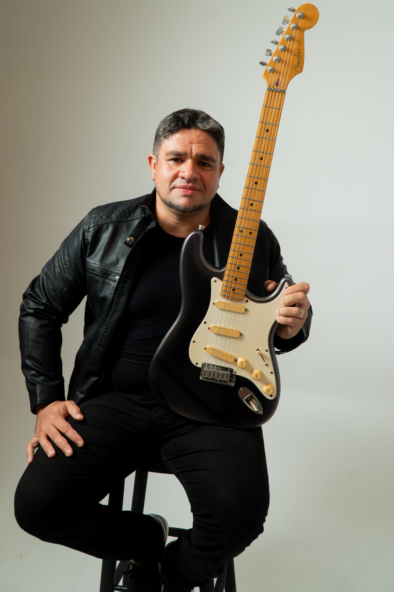

Gê Carraras
· vocal
Gustavo Loureiro
· guitarra
Wilker Batista
· baixo
Miguel Angelo
· bateria
Rádio Blá: A Excelência do Rock com a Energia Irresistível do Baile
"Com mais de uma década de estrada, a Rádio Blá é sinônimo de química de palco e profissionalismo."
Unindo a atitude do rock com a versatilidade de uma banda de baile, entregamos uma experiência sonora premium que domina desde os palcos mais exigentes de Fortaleza até os eventos privados mais exclusivos.
rebase_edit DNA e Formação
O quarteto mantém a mesma sintonia desde 2010. Essa longevidade se traduz em um entrosamento técnico impecável, garantindo segurança e alta performance em cada nota, especialmente nos circuitos do Brewstone, Floresta, Turatti, 5Elementos, Beghûs Steak, 88Bier eoutros.
star Experiência Premium
- — Casamentos
- — Eventos Corporativos
- — Festas Privadas
- — Grandes Festivais